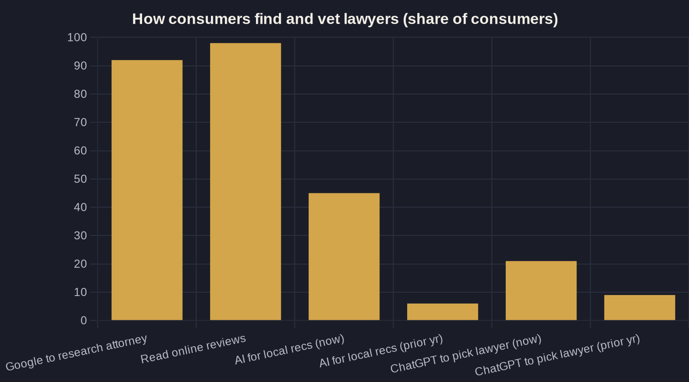

Local SEO for Law Firms (Plus Getting Found in AI Search)
How law firms get found when a stranger needs an attorney now — across the Google map pack and the AI assistant that answers before anyone clicks. Measured in booked calls, not rankings.
Key takeaways
- Local SEO for law firms is now two searches: ranking in Google's map pack and getting named inside the AI answer that sits above it.
- Your Google Business Profile and review flow are the core assets — 98% of consumers read reviews, and the same signals feed AI recommendations.
- AI summaries appear on roughly 18% of Google searches and cut click-through to a result roughly in half, so being cited beats ranking below the answer.
- Ranking is not revenue: only 40% of firms answer the prospect's call, yet 37% of phone leads convert — the booked consultation is the real scoreboard.
- Sequence a 90-day plan (profile, reviews, content, intake) and measure cost per signed case, not impressions.
What Local SEO for Law Firms Actually Means
Local SEO (search engine optimization — earning unpaid visibility in search) is the work of getting your firm to surface the moment someone nearby types "DUI lawyer near me" or asks an assistant who to call. For a law firm that is not abstract traffic. It is the difference between a stranger finding you first and finding the firm three blocks over. In a 1,050-person study on how consumers choose lawyers, 92% said they would use Google to research an attorney before ever reaching out.
What makes local SEO for law firms different from generic SEO is intent and geography. Legal demand is local, time-sensitive, and high-stakes, and most of it resolves in the "local pack" — the map and three listings Google stacks above the blue links. Winning that space is the whole game, and it runs on the same local-SEO foundations every service business needs. The mechanics are familiar; the margin for error is smaller, because a single matter can be worth thousands.
The Two Searches Every Firm Now Has to Win
Until recently, local SEO for law firms meant one thing: rank in Google's local pack. Now there are two surfaces, and they behave differently. Generative AI tools like ChatGPT, Gemini, and Perplexity went from 6% to 45% of consumers using AI to find local businesses in a single year — now the third most popular discovery source behind only Google and Facebook.
The second shift is happening inside Google itself. A Pew Research analysis of real U.S. Google searches found AI summaries now appear on about 18% of searches, and when one shows up, people click a traditional result in only 8% of visits versus 15% without it — roughly half the click-through. Ranking number one underneath an AI answer that already recommended your competitor is a quiet way to lose. So the job has changed: rank in the map, and get named in the answer above it.
Your Google Business Profile Is the Asset
The single highest-leverage asset in local SEO for law firms is your Google Business Profile — the free listing that feeds the map pack and, increasingly, the AI answers built on top of it. It is also where reviews live, and reviews are not decoration. 98% of consumers read online reviews for local businesses at least occasionally, which makes your star rating and review count a ranking lever and a conversion lever at the same time.
Treat the profile like a storefront, not a checkbox. Accurate practice-area categories, real photos, a complete description, and consistent name-address-phone across the web all feed how Google ranks and how AI describes you. Work through a Google Business Profile optimization checklist once, then build a steady, bar-compliant flow of Google reviews so the asset compounds instead of going stale.
Getting Found in AI Search
AI search is no longer a novelty for legal. The share of people who said they would consult ChatGPT when choosing a lawyer more than doubled in a year, from 9% to 21%. These tools do not invent recommendations — they assemble them from the same signals local SEO has always rewarded: clear, consistent business information, strong reviews, and authoritative content that actually answers the question.
That is why the AI angle is not a separate strategy bolted on. The firms that get cited inside an AI answer are the ones with a clean profile, real review volume, and pages that explain their practice areas in plain language. Given that an AI summary roughly halves the odds a searcher clicks through, being named in the answer is worth more than a high rank no one scrolls to. Structure your content around the questions clients actually ask, and you give the machine something accurate to repeat.
| Funnel stage | Benchmark | What it tells you |
|---|---|---|
| Research the attorney | 92% use Google | Your Google presence is the first impression |
| Read reviews before reaching out | 98% read online reviews | Rating and volume are conversion levers, not vanity |
| Use AI for local recommendations | 45% (up from 6% a year earlier) | AI search is now a mainstream discovery channel |
| AI summary shown on a Google search | ~18% of searches | Being cited in the answer beats ranking below it |
| Firm answers the prospect's call | 40% (down from 56% in 2019) | Nearly half of inquiries die at the phone |
| Phone leads that convert on the call | 37% | The booked consult, not the click, is the win |

Owner's Math: Ranking Is Not Revenue
Here is where most firms leak money. Local SEO for law firms produces an inquiry — a call, a form, a chat. But ranking is not revenue, and the gap between the two is brutal. Clio's secret-shopper study found only 40% of law firms answered a prospective client's phone call, down from 56% in 2019, and 48% were effectively unreachable — never answered and never called back.
That matters because the phone is where the case is won. Invoca's analysis of 60 million phone conversations found 37% of phone leads convert on the call for exactly this kind of high-consideration purchase. So the honest scoreboard is not impressions or even rankings — it is booked consultations at a known cost per case. That is Owner's Math: trace one dollar from an impression in the local 3-pack to a signed matter, and you stop guessing whether SEO is working.
A 90-Day Local SEO Plan for Law Firms
You do not need a year. You need to fix the few things that move ranking and revenue, in order. Most firms see movement in the map pack within a quarter when they sequence it correctly and stop fumbling the call at the end.
- Weeks 1–3: Claim and fully complete the Google Business Profile — correct categories, service areas, photos, and consistent NAP everywhere it appears.
- Weeks 3–6: Launch a compliant review system so volume and recency climb every week, not in occasional bursts.
- Weeks 5–9: Build plain-language practice-area pages that answer real client questions — the same content AI tools pull from.
- Weeks 8–12: Fix intake. Track every call, answer live during business hours, and call back fast. This is the single change with the highest dollar return.
Do that, and local SEO for law firms stops being a vanity project and becomes a measurable channel. If you want a second set of eyes on your own numbers — where you rank, where the inquiries leak, and what a signed case actually costs you — that is the kind of teardown I publish in the newsletter, and the conversation worth having on a call.
Sources
- iLawyerMarketing — New Study: How Consumers Choose Lawyers (1,050-respondent survey) (2025)
- BrightLocal — Local Consumer Review Survey (2026)
- Pew Research Center — Google users are less likely to click on links when an AI summary appears (2025)
- BrightLocal — Online Review Statistics (Local Consumer Review Survey) (2025)
- Clio — 2024 Legal Trends Report (highlights) (2024)
- Invoca — 5 Insights From Analyzing 60 Million Phone Conversations (2025)
Want this run on your numbers?
Book a call and we will run the Owner's Math on your business — clear numbers, a straight plan, no pitch. Or read the free Playbook first.